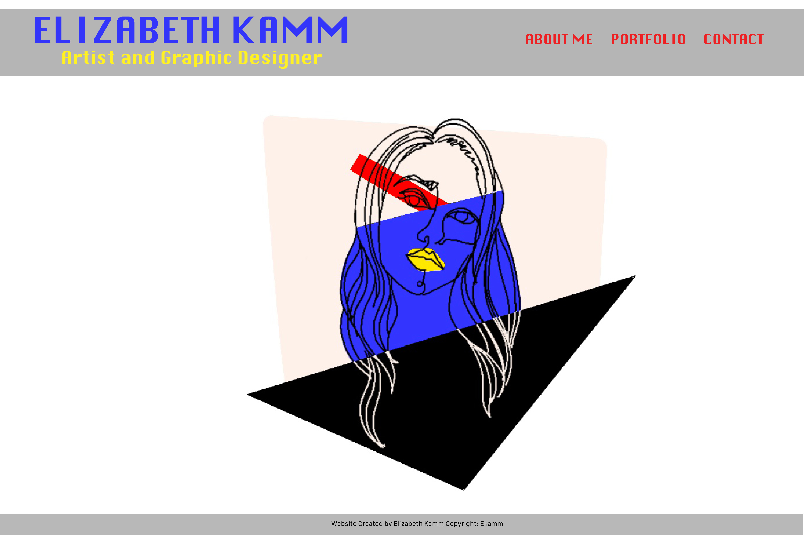
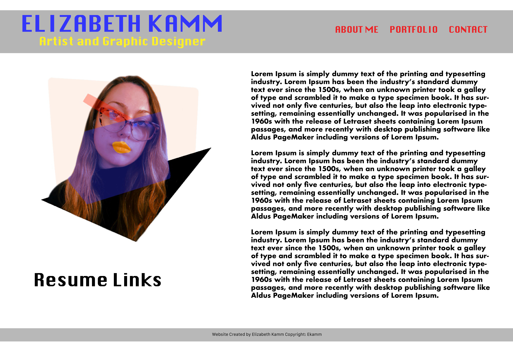
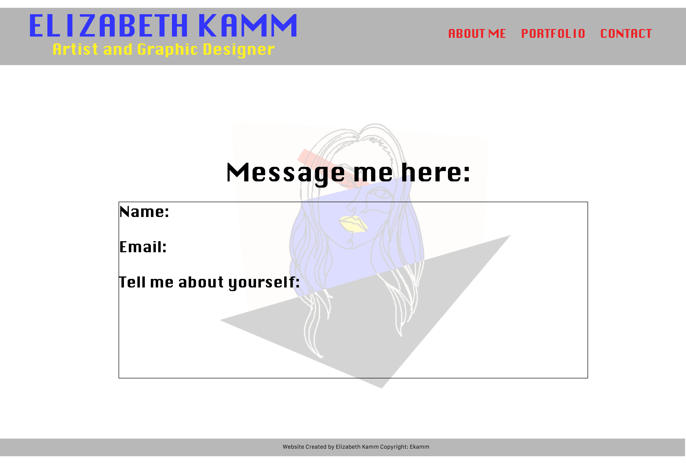

Ok so I was a little lost befre but I think that this is all coming together. .I really like primary colors but simple design. I want people to have a sense of style but coordination. I like the digital text as well since it goes well with the digital theme and colors. I would like a old school arrow instead of a normal one and the text to change to a different primary color when clicked or visited etc. I like this one since it is easy to update if I choose to add a different background but also its layout makes a lot of sense.

I like this website layout a lot more than the light purple color. I also want to update the picture of me.
